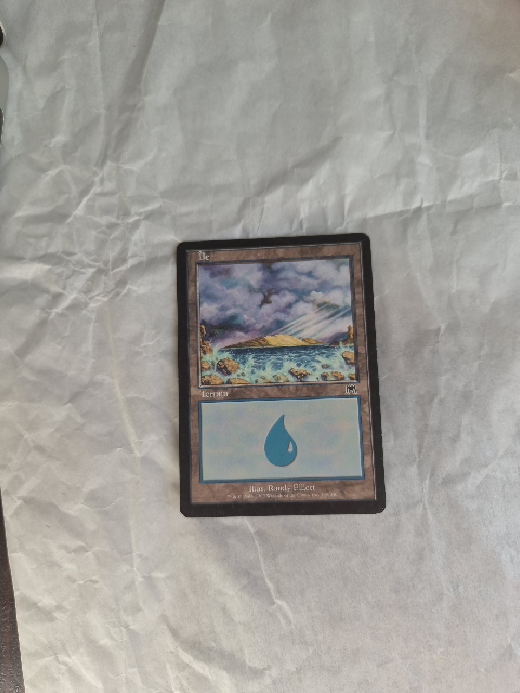
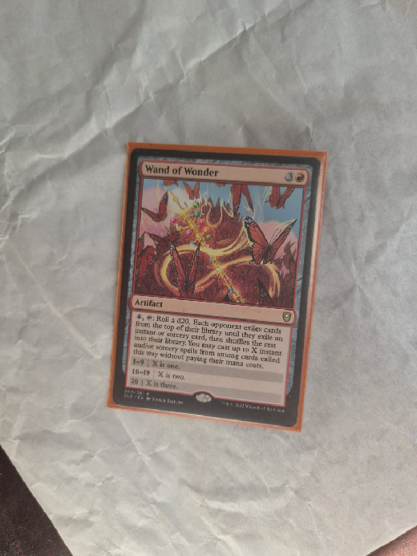
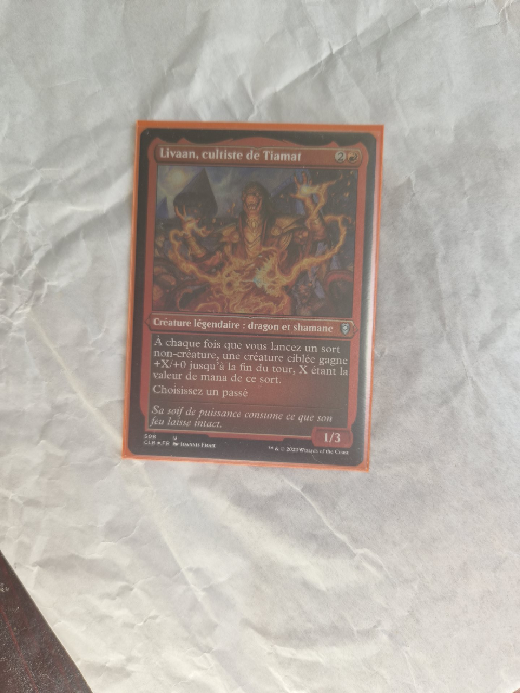
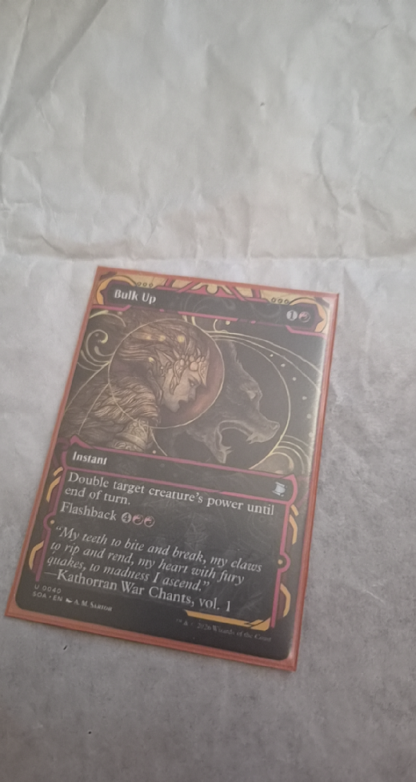

Green = human card. Blue = best IoU accepted candidate. Red = selected quad. Other colors are the next score-ranked candidates. Rank is the detector score order, not IoU order.
Island cq-120629
SELECTION_FAILURE. Selected IoU 0.190. Best IoU 0.981 at score rank 3. Lost at score-ranking. TRACKING_NOT_MEASURABLE.

Wand cq-120751
SELECTION_FAILURE. Selected IoU 0.251. Best IoU 0.961 at score rank 5. Lost at score-ranking. TRACKING_NOT_MEASURABLE.

Livaan cq-120813
SELECTION_FAILURE. Selected IoU 0.226. Best IoU 0.943 at score rank 6. Lost at score-ranking. TRACKING_NOT_MEASURABLE.

Bulk Up
SELECTION_FAILURE. Selected IoU 0.344. Best IoU 0.867 at score rank 1. Lost at nested-selection. TRACKING_NOT_MEASURABLE.

Mudbutton Torchrunner
SELECTION_FAILURE. Selected IoU 0.318. Best IoU 0.862 at score rank 2. Lost at score-ranking. TRACKING_NOT_MEASURABLE.